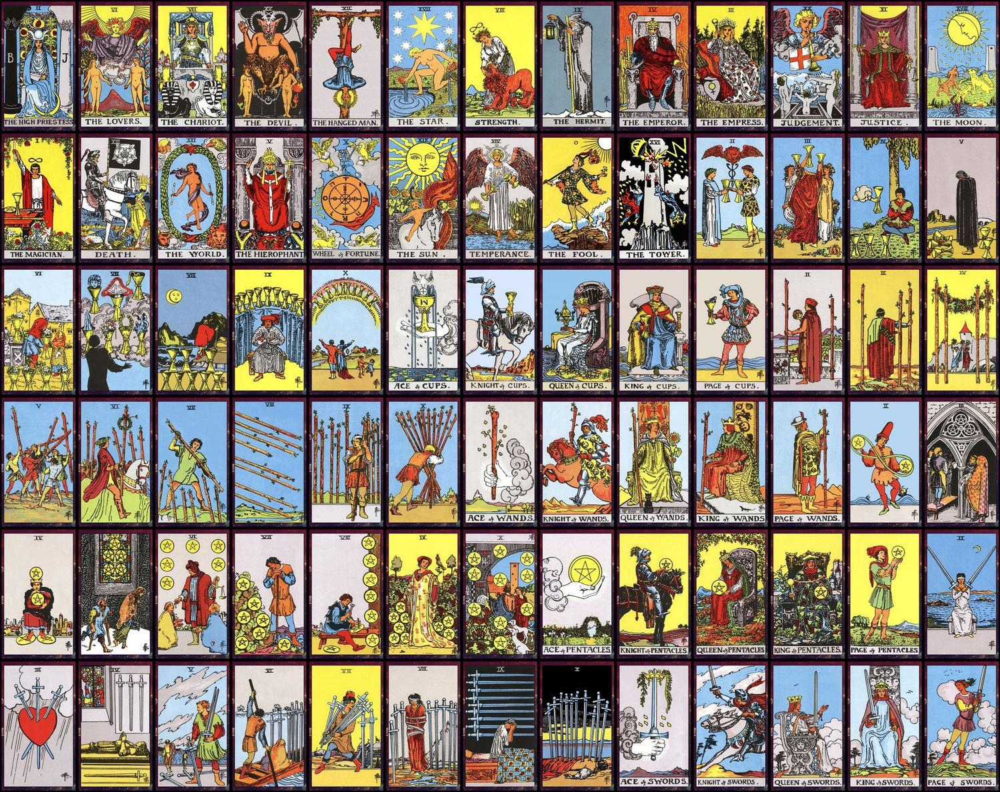
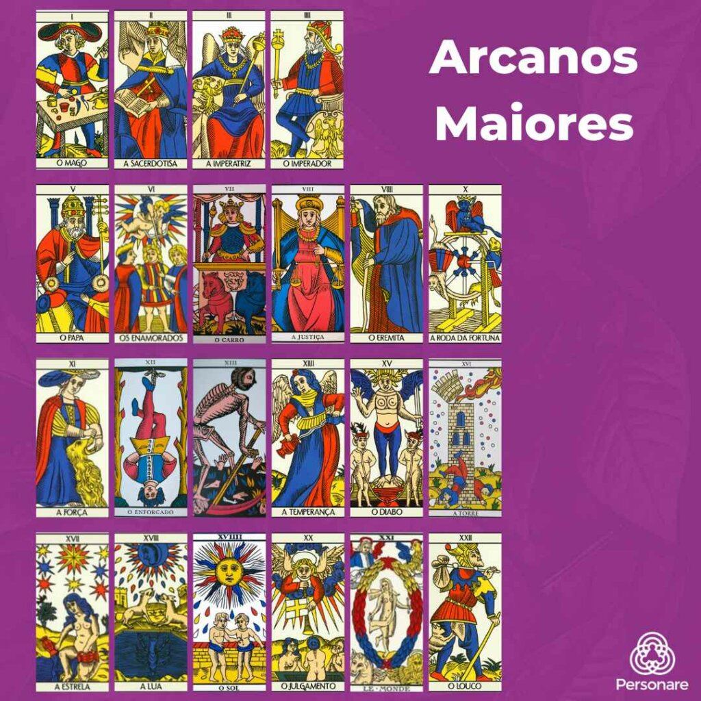
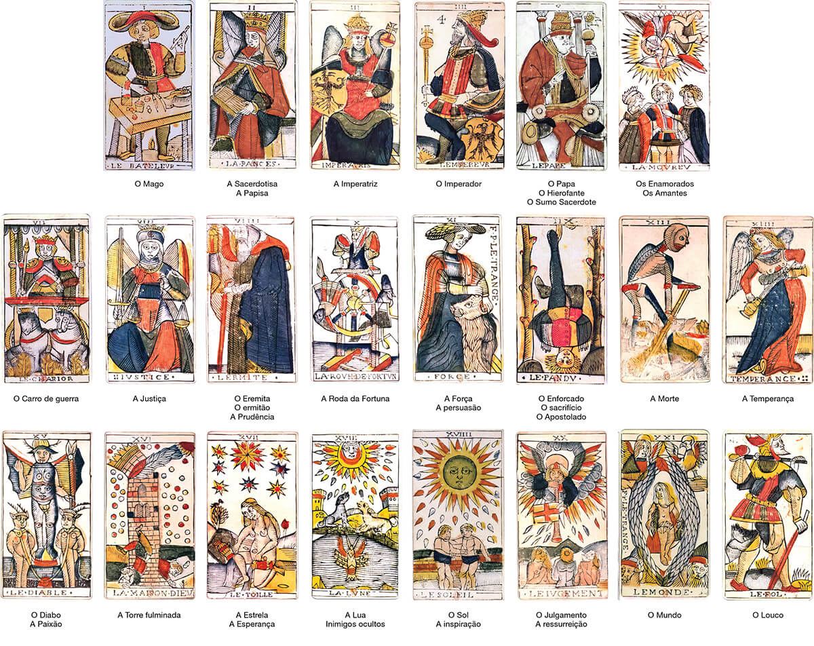

Tarot: Origem, Tradições, Tipos e Diferenças
Origem e História do Tarot
O Tarot é um conjunto de cartas que possui uma rica e misteriosa história, envolvendo tradições esotéricas, jogos recreativos e práticas divinatórias. Embora existam muitas teorias sobre sua origem, as evidências históricas mais confiáveis apontam que as cartas de Tarot surgiram entre os séculos XIV e XV no norte da Itália, durante o período renascentista.
As primeiras cartas de Tarot de que se tem notícia foram criadas para um jogo de mesmo nome, que era jogado pelos nobres e pelos senhores das casas mais tradicionais da Europa continental. Inicialmente, não havia qualquer associação com práticas divinatórias ou esotéricas. O Tarot era simplesmente um jogo de cartas sofisticado, apreciado pela aristocracia europeia.
A palavra "Tarot" (ou em outras línguas: tarot, tarock, tarok, tarocco, tarocchi) não possui uma tradução específica, e sua etimologia permanece incerta. Algumas teorias sugerem que o termo pode derivar da palavra árabe "turuq", que significa "quatro caminhos", ou talvez do árabe "tarach", que significa "rejeito". Segundo a etimologia francesa, "tarot" é um empréstimo do italiano "tarocco", derivado de "tara", que se refere à "perda de valor que sofre uma mercadoria; dedução, ação de deduzir".
Os jogos de cartas entraram na Europa no final do século XIV, com os mamelucos da Pérsia, cujos jogos tinham naipes muito semelhantes aos naipes latinos italianos e espanhóis: espadas, bastões, copas e ouros (moedas). As evidências atualmente mostram que os primeiros baralhos de Tarot foram criados entre 1410 e 1430 em Milão, Ferrara ou Bolonha, no norte da Itália, quando cartas de trunfo foram adicionadas aos já existentes baralhos de naipe.
Esses novos baralhos foram chamados de "carte da trionfi" (cartas de triunfo), e as cartas adicionais simplesmente de "trionfi", termo que originou a palavra "trunfo" em português. A primeira evidência literária da existência das "carte da trionfi" foi um registro escrito nos autos da corte de Ferrara, em 1442. As mais antigas cartas de Tarot existentes são de quinze baralhos incompletos pintados em meados do século XV para a família governante de Milão, os Visconti Sforza.
Não há documentos que atestem o uso divinatório do Tarot anteriores ao século XVIII, embora se saiba que o uso de cartas semelhantes para tal fim era evidente por volta de 1540. Um livro intitulado "Os Oráculos de Francesco Marcolino da Forli" apresenta um método divinatório simples usando o naipe de ouros de um baralho comum. Manuscritos de 1735 ("O Quadrado dos Setes") e 1750 ("Cartomancia Pratesi") documentam o significado rudimentar divinatório das cartas de Tarot, bem como um sistema de tirada de cartas.
Foi somente no século XVIII que as cartas de Tarot começaram a ser associadas à adivinhação e práticas esotéricas. Desde então, o Tarot passou a integrar o cerne do esoterismo moderno, juntamente com a cabala, a astrologia e a alquimia. No século XIX, com o avanço dos processos gráficos, novas versões dos antigos baralhos foram desenvolvidas, publicadas e popularizadas, contribuindo para a disseminação do Tarot como instrumento de autoconhecimento e previsão do futuro.
Estrutura e Características do Tarot
O Tarot tradicional é composto por 78 cartas, divididas em dois grandes grupos: os Arcanos Maiores e os Arcanos Menores. A palavra "arcano" significa "mistérios ou segredos a serem desvendados" e foi incorporada pelos ocultistas do século XIX para se referir às cartas do Tarot.
Arcanos Maiores
Os Arcanos Maiores são compostos por 22 cartas, numeradas de 0 a 21, que representam arquétipos universais e jornadas espirituais. Cada carta possui um nome e uma imagem simbólica que representa um conceito ou uma etapa da jornada humana. As cartas dos Arcanos Maiores são:
0 - O Louco: representa o início da jornada, a inocência e a espontaneidade.
1 - O Mago: simboliza a habilidade, o poder pessoal e a manifestação.
2 - A Sacerdotisa: representa a intuição, o mistério e o conhecimento oculto.
3 - A Imperatriz: simboliza a fertilidade, a abundância e a criatividade.
4 - O Imperador: representa a autoridade, a estrutura e a estabilidade.
5 - O Hierofante: simboliza a tradição, a educação e a sabedoria espiritual.
6 - Os Enamorados: representam o amor, as escolhas e a harmonia.
7 - O Carro: simboliza a determinação, o controle e o sucesso.
8 - A Força: representa a coragem, a paciência e o domínio sobre os instintos.
9 - O Eremita: simboliza a introspecção, a busca interior e a solidão.
10 - A Roda da Fortuna: representa as mudanças, os ciclos e o destino.
11 - A Justiça: simboliza o equilíbrio, a verdade e a imparcialidade.
12 - O Enforcado: representa o sacrifício, a rendição e a nova perspectiva.
13 - A Morte: simboliza a transformação, o fim de um ciclo e o renascimento.
14 - A Temperança: representa a moderação, a harmonia e a integração.
15 - O Diabo: simboliza as tentações, os vícios e as limitações.
16 - A Torre: representa a destruição, a revelação e a libertação.
17 - A Estrela: simboliza a esperança, a inspiração e a renovação.
18 - A Lua: representa a intuição, os sonhos e o inconsciente.
19 - O Sol: simboliza a vitalidade, a alegria e o sucesso.
20 - O Julgamento: representa o despertar, a renovação e a redenção.
21 - O Mundo: simboliza a realização, a integração e a plenitude.
Arcanos Menores
Os Arcanos Menores são compostos por 56 cartas, divididas em quatro naipes: Paus, Copas, Espadas e Ouros. Cada naipe contém dez cartas numeradas (do Ás ao 10) e quatro cartas da corte (Pajem ou Princesa, Cavaleiro ou Príncipe, Rainha e Rei). Os Arcanos Menores representam situações cotidianas e aspectos mais específicos da experiência humana.
Os quatro naipes estão associados a diferentes elementos e aspectos da vida:
- Paus: associado ao elemento Fogo, representa a criatividade, a energia, a ação e o trabalho.
- Copas: associado ao elemento Água, representa as emoções, os relacionamentos, o amor e a intuição.
- Espadas: associado ao elemento Ar, representa o intelecto, a comunicação, os conflitos e as decisões.
- Ouros: associado ao elemento Terra, representa os aspectos materiais, financeiros, a saúde e a segurança.
As cartas da corte representam pessoas ou aspectos da personalidade:
- Pajem/Princesa: representa a juventude, o aprendizado e o início de uma jornada.
- Cavaleiro/Príncipe: simboliza a ação, o movimento e a busca.
- Rainha: representa o aspecto feminino, a nutrição e a expressão emocional.
- Rei: simboliza o aspecto masculino, a autoridade e a realização.
Tipos de Tarot e suas Diferenças
Ao longo dos séculos, diversos tipos de Tarot foram criados, cada um com suas características, simbolismos e estéticas próprias. A cada ano, mais de 100 novos baralhos chegam às lojas de todo o mundo, incluindo versões de baralhos antigos, criações artísticas baseadas em baralhos conhecidos e até mesmo oráculos totalmente diferentes daquele que conhecemos tradicionalmente como Tarot.
Apesar da grande variedade, para que um baralho seja considerado Tarot, ele deve manter a estrutura tradicional de 78 cartas, divididas em 22 Arcanos Maiores e 56 Arcanos Menores. Entre os tipos de Tarot mais conhecidos e influentes, destacam-se:
Tarot de Marselha
O Tarot de Marselha é um dos baralhos mais antigos e ainda hoje amplamente utilizado. Seu nascimento ocorreu provavelmente no norte da Itália, embora não existam documentos que atestem sua existência antes do século XIV. Posteriormente, foi introduzido no sul da França, onde passou a ser copiado e comercializado como um instrumento lúdico.
As características distintivas do Tarot de Marselha incluem suas imagens medievais e cores primárias, resultado dos recursos gráficos limitados da época. É considerado um baralho clássico, estrutural e conceitual, do qual deriva a maioria dos baralhos de Tarot lançados desde o século XVIII.
O Tarot de Marselha é conhecido por sua simplicidade e por manter a essência simbólica original do Tarot. Seus Arcanos Menores são representados apenas por símbolos dos naipes, sem cenas ilustrativas, o que exige do leitor um conhecimento mais profundo dos significados tradicionais das cartas.
Rider-Waite Tarot
O Tarot Rider-Waite, concebido pelo ocultista inglês Arthur Edward Waite e ilustrado por Pamela Colman Smith, é o baralho mais vendido em todo o mundo. Foi publicado pela primeira vez em 1910, juntamente com o livro "The Pictorial Key to the Tarot", editado pela "Rider&Son" de Londres.
Uma das principais inovações deste baralho foi a ilustração dos Arcanos Menores com cenas que representam visualmente seus significados. Por exemplo, onde se via apenas três taças no arcano "Três de Copas" dos baralhos tradicionais, no Tarot de Waite vemos uma cena de celebração entre três donzelas que brindam com seus respectivos cálices. Essa abordagem tornou o baralho mais acessível e intuitivo para iniciantes.
Outras alterações significativas incluem a troca de posição entre os arcanos 8 (A Justiça) e 11 (A Força), refletindo uma interpretação específica da relação entre esses arquétipos. Devido a essas inovações, o Tarot Rider-Waite influenciou fortemente a maioria dos baralhos criados posteriormente.
Tarot de Thoth
Criado pelo escritor e mago inglês Aleister Crowley em colaboração com a artista plástica Frieda Harris entre 1938 e 1943, o Tarot de Thoth é considerado por estudiosos como o legado de todo o conhecimento esotérico de Crowley.
O baralho é atribuído a Thoth, deus egípcio da escrita e do conhecimento, que segundo a lenda teria deixado um livro com todos os seus saberes. Embora muitos esotéricos acreditem que esse livro tenha dado origem ao Tarot, as pesquisas históricas descartam essa hipótese.
O Tarot de Thoth apresenta uma repaginação impressionante, com associações entre imagens tradicionais e figuras mitológicas. Por exemplo, "A Sacerdotisa" é representada como a deusa romana Diana, protetora das virgens e grande senhora da caça.
As nomenclaturas dos arcanos sofrem algumas alterações consideráveis. A mais marcante é a troca dos Pajens por Princesas, Cavaleiros por Príncipes e Reis por Cavaleiros. Além disso, os Arcanos Menores, com exceção dos quatro Ases, receberam títulos afinados aos seus respectivos atributos oraculares. Por exemplo, o "Dois de Copas" é chamado de "Amor" e o "Cinco de Espadas", de "Derrota".
O Tarot de Thoth é conhecido por sua complexidade simbólica e por incorporar elementos da astrologia, numerologia e cabala, refletindo o vasto conhecimento esotérico de Crowley.
Tarot Mitológico
Desenvolvido pela astróloga Liz Greene e pela taróloga Juliette Sharman-Burk, com ilustrações da artista plástica Tricia Newell, o Tarot Mitológico foi lançado pela editora Fireside em 1986 e é um dos baralhos mais traduzidos e vendidos em todo o mundo.
Este baralho adapta as imagens medievais do Tarot tradicional às diversas personagens e passagens da mitologia grega. Por exemplo, "O Louco" é representado por Dionísio, deus do vinho e da celebração, enquanto "A Imperatriz" é associada a Deméter, deusa da fertilidade e da agricultura.
Embora seja frequentemente considerado um baralho "mais fácil" para iniciantes devido à familiaridade de muitas pessoas com os mitos gregos, especialistas alertam que a associação direta entre os arquétipos do Tarot e as figuras mitológicas pode limitar a interpretação tanto do oráculo quanto das narrativas gregas.
Tradições e Práticas do Tarot
Ao longo dos séculos, diversas tradições e práticas se desenvolveram em torno do Tarot, refletindo diferentes abordagens e interpretações deste poderoso instrumento de autoconhecimento e previsão.
Tradição Divinatória
A tradição divinatória do Tarot, que se consolidou a partir do século XVIII, utiliza as cartas como um meio de acessar informações sobre o passado, o presente e o futuro. Nesta abordagem, as cartas são embaralhadas e dispostas em padrões específicos, chamados de "tiragens" ou "jogos", que orientam a interpretação.
Algumas das tiragens mais conhecidas incluem:
- A Tiragem de Três Cartas: representa passado, presente e futuro, ou situação, obstáculo e conselho.
- A Cruz Celta: composta por dez cartas, oferece uma visão abrangente da situação, incluindo influências passadas e futuras, medos, esperanças e resultado provável.
- A Ferradura: utiliza sete cartas para analisar uma situação específica e suas possíveis soluções.
- O Espelho: composta por cinco cartas, ajuda a refletir sobre um relacionamento ou parceria.
Na tradição divinatória, o tarôlogo (pessoa que lê as cartas) atua como um intérprete dos símbolos e mensagens contidos nas cartas, ajudando o consulente a compreender sua situação atual e as possíveis tendências futuras.
Tradição Psicológica
A abordagem psicológica do Tarot, que ganhou força no século XX, foi influenciada pelos trabalhos de Carl Gustav Jung sobre arquétipos e inconsciente coletivo. Nesta perspectiva, as cartas do Tarot são vistas como representações de arquétipos universais que ressoam com o inconsciente humano.
Jung via o Tarot como um instrumento valioso para o processo de individuação, o caminho de autoconhecimento e integração dos aspectos conscientes e inconscientes da psique. As cartas dos Arcanos Maiores, em particular, são interpretadas como etapas dessa jornada de desenvolvimento pessoal.
Na tradição psicológica, o Tarot é utilizado como uma ferramenta de autoconhecimento, reflexão e crescimento pessoal, mais do que como um instrumento de previsão do futuro. As cartas funcionam como espelhos que refletem aspectos da psique do consulente, ajudando-o a acessar conteúdos inconscientes e a desenvolver uma compreensão mais profunda de si mesmo.
Tradição Esotérica
A tradição esotérica do Tarot, desenvolvida principalmente a partir do século XIX, integra o Tarot a outros sistemas de conhecimento oculto, como a cabala, a astrologia e a alquimia. Nesta abordagem, as cartas do Tarot são vistas como portadoras de sabedoria ancestral e conhecimento iniciático.
Um dos principais expoentes dessa tradição foi Eliphas Lévi, ocultista francês que estabeleceu correspondências entre as cartas do Tarot e as letras do alfabeto hebraico, os planetas e os elementos alquímicos. Posteriormente, a Ordem Hermética da Aurora Dourada (Golden Dawn) expandiu essas correspondências, criando um sistema complexo que influenciou profundamente a compreensão esotérica do Tarot.
Na tradição esotérica, o estudo do Tarot é visto como um caminho de iniciação espiritual, que conduz o praticante a níveis mais elevados de consciência e compreensão dos mistérios universais. As cartas são consideradas portais para dimensões mais sutis da realidade, permitindo ao iniciado acessar conhecimentos e energias além do plano material.
O Tarot como Instrumento de Autoconhecimento
Além de suas aplicações divinatórias e esotéricas, o Tarot tem sido cada vez mais reconhecido como uma poderosa ferramenta de autoconhecimento e desenvolvimento pessoal. Nesta perspectiva, as cartas funcionam como espelhos que refletem aspectos da psique, ajudando o indivíduo a explorar suas motivações, padrões de comportamento e potenciais não realizados.
O processo de consulta ao Tarot estimula a intuição e a reflexão, permitindo que o consulente acesse insights e percepções que podem estar além do alcance do pensamento racional. As imagens simbólicas das cartas ativam o pensamento associativo e a imaginação, facilitando conexões entre diferentes aspectos da experiência pessoal.
Muitos terapeutas e conselheiros contemporâneos incorporam o Tarot em suas práticas, utilizando-o como um complemento a abordagens mais tradicionais de aconselhamento e psicoterapia. As cartas podem servir como pontos de partida para discussões significativas sobre questões emocionais, relacionamentos, escolhas de vida e crescimento pessoal.
O Tarot também pode ser utilizado como uma prática de mindfulness ou meditação, ajudando o indivíduo a se conectar com o momento presente e a desenvolver uma maior consciência de seus pensamentos, sentimentos e intuições. A contemplação regular das cartas pode promover um diálogo interno mais profundo e uma compreensão mais nuançada da própria jornada de vida.
Conclusão
O Tarot, com sua rica história, simbolismo complexo e diversas tradições, continua a fascinar e inspirar pessoas em todo o mundo. Seja como um jogo recreativo, um instrumento de adivinhação, uma ferramenta de autoconhecimento ou um caminho de exploração espiritual, o Tarot oferece um espelho multifacetado para a experiência humana.
A diversidade de baralhos disponíveis hoje reflete a capacidade do Tarot de se adaptar a diferentes contextos culturais, filosóficos e estéticos, mantendo ao mesmo tempo sua estrutura essencial e seu poder simbólico. Cada tipo de Tarot, com suas características e ênfases particulares, oferece uma porta de entrada única para os mistérios e possibilidades deste antigo sistema de sabedoria.
Em um mundo cada vez mais acelerado e fragmentado, o Tarot convida a uma pausa reflexiva, a um momento de conexão com dimensões mais profundas da existência. Seja qual for a abordagem escolhida, o Tarot continua a ser um companheiro valioso na jornada de autodescobrimento e compreensão do universo que nos cerca.